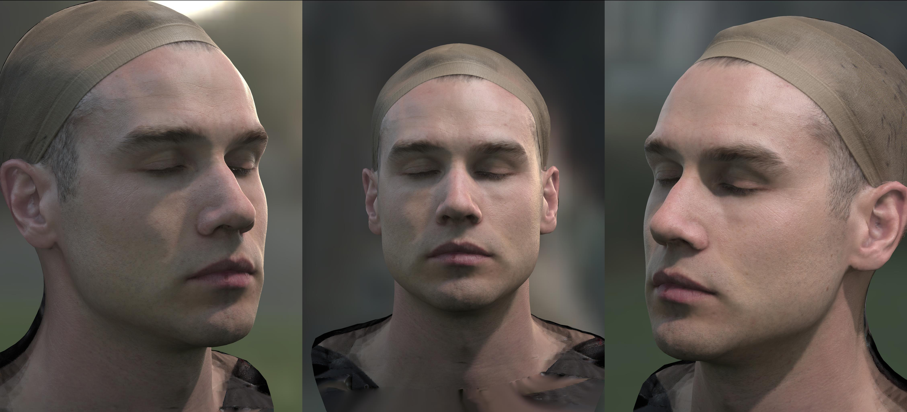
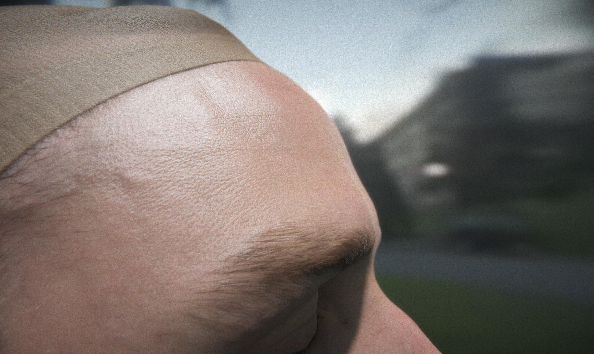
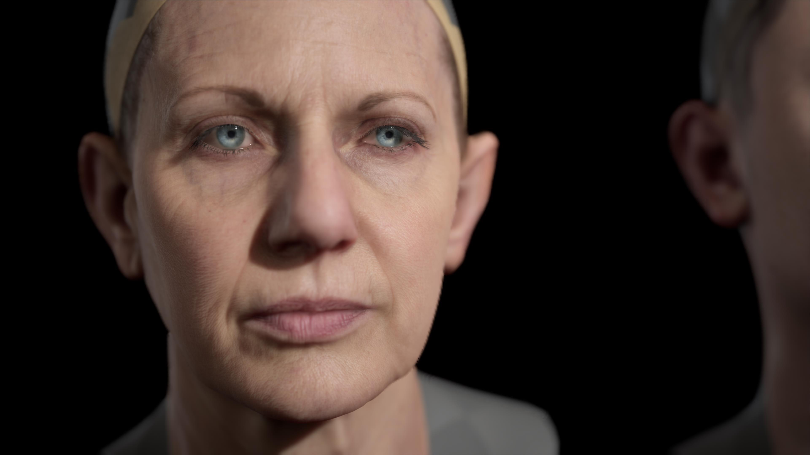
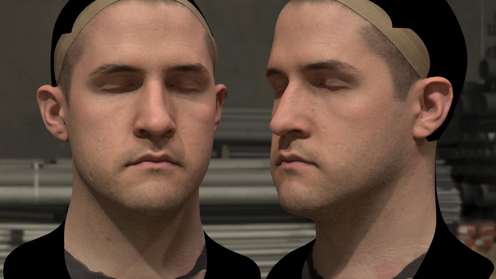
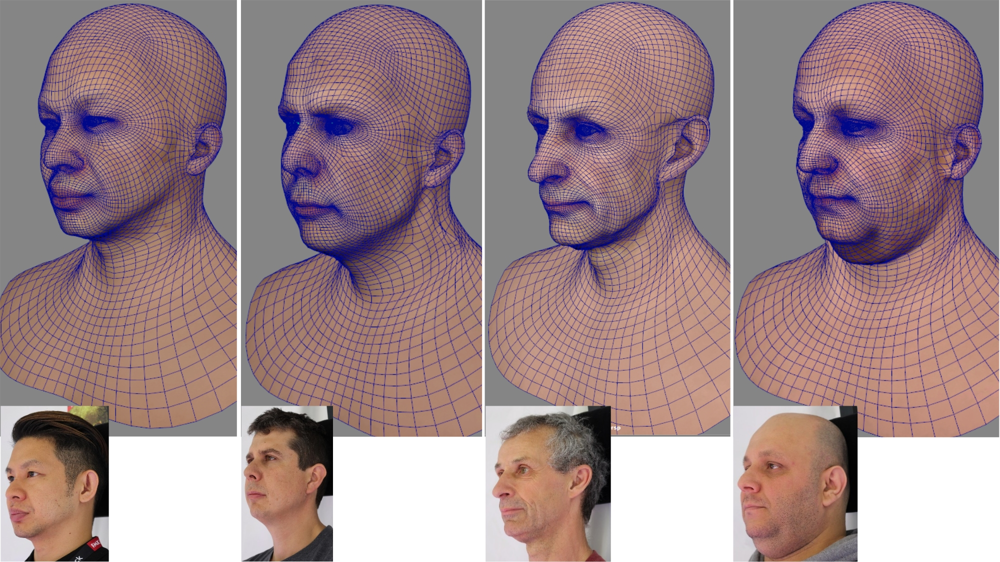
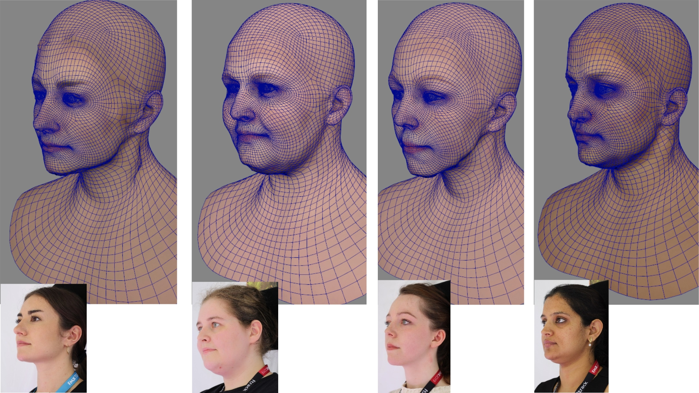
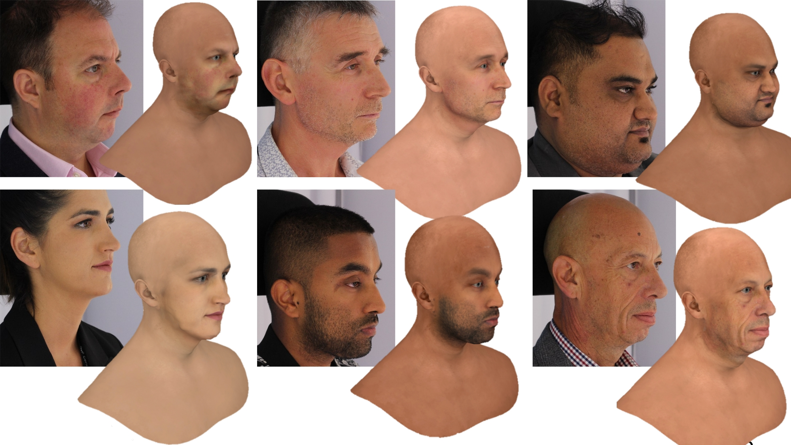

CRDH : From Capture to Rendering of Digital Humans for AR/VR
December 16 @ 3rd IEEE International Conference on AIVR 2020 in Utrecht, The Netherlands.
INTRODUCTION
NEWS
REGISTRATION & CONNECTION
Workshop Date: December 16, 2020
Tentative Program:
1:30pm - 3:30pm CET Session 1: Workshop CRHD (part 1)
5:30 - 7:30 CET Session 3: Workshop CRHD (part 2)
Tentative Program:
1:30pm - 3:30pm CET Session 1: Workshop CRHD (part 1)
- 1:30 - 1:40 Introduction
- 1:40 - 2:30 Keynote Speaker: Gerard Pons-Moll
- 2:30 - 3:00 Invited Talk: Adnane Boukhayma
- 3:00 - 3:30 Invited Talk: Yajie Zhao
- 5:30 - 5:40 Introduction
- 5:40 - 6:30 Keynote Speaker: Wan-Chun Alex Ma
- 6:30 - 7:00 Invited Talk: Koki Nagano
- 7:00 - 7:30 Invited Talk: Mario Botsch
KEYNOTE SPEAKERS

|
Wan-Chun Alex Ma Title: Realism for Digital Faces: Modeling Appearance and Motion Bio: Wan-Chun Alex Ma is a senior research scientist at ByteDance. His research interests include: digital human, facial animation, performance capture, photogrammetry, image-based modeling and rendering, geometry processing, and machine learning. He has been affiliated with Google, Activision Blizzard, ETH Zurich, Weta Digital, and USC Institute for Creative Technologies. His career has spanned more than a decade across many fields including visual effects, video game development, and augmented reality. As a Senior Software Engineer at Google, he led the research and development of a new lighting estimation technique that promotes realism in augmented reality. He also held research scientist positions at both Weta Digital and Activision Blizzard, where his work on facial performance capture contributed to motion pictures and video games, including the Hobbit Trilogy, Iron Man 3, the recent Planet of the Apes series, Furious 7, The BFG, and the Call of Duty series. His works have been published at conferences such as SIGGRAPH, SIGGRAPH Asia, Eurographics, EGSR, SGP, and I3D. Ma received his Ph.D. degree from National Taiwan University in 2008. His dissertation on the Polarized Spherical Gradient Illumination facial appearance capture system has been used extensively for creating photoreal digital actors by the visual effects industry. This work was later recognized by the AMPAS with the Academy Award for Technical Achievement in 2019. Abstract: Nowadays digital humans are widely adopted in emerging areas such as extended reality, virtual production and gaming. We have witnessed in various applications that creating a completely realistic digital human face is not an impossible task anymore. In this talk we will examine technical key issues and solutions on modeling the appearance and motion of digital faces in the history of digital face creation, along with examples from prior feature film productions or academia works. We will also look at what are the next areas we should address more for increasing the realism for digital faces in the near future. |
| Gerard Pons-Moll Title: TBD Bio: TBD Abstract: TBD |
INVITED SPEAKERS
| Adnane Boukhayma Title: Learning to reconstruct human parts from a single image with limited paired training data Bio: Adnane Boukhayma is a tenured research scientist (chargé de recherche) at Inria Rennes specializing in 3D computer vision and deep learning, with a focus on human capture and synthesis. Previously, he was a postdoctoral researcher at the University of Oxford in the Torr Vision Group lead by Prof. Philip Torr. He obtained his PhD at Inria Grenooble under the supervision of Dr. Edmond Boyer. Abstract: 3D reconstruction of humans and their various body parts is key in enabling numerous applications including i.e. human digitization, XR and human machine interaction. In this respect, learning based approaches have recently allowed to lower the acquisition constraints, and we are able to build systems that can obtain reliable reconstructions from as much as a commodity monocular color input, especially for class specific tasks. These are mostly deep learning networks that rely on learning strong statistical priors given enough training data. For 3D prediction tasks, obtaining substantial amounts of training images in the wild paired with 3D ground-truth can be challenging. We show here how to deal with this issue by exploiting other forms of data such as pre-built parametric models or multi-modal unpaired data within a deep learning framework. |
|
| Mario Botsch Title: Reconstructing Realistic Avatars with(out) a Complex Photogrammetry Scanner Bio: Mario Botsch is professor for Computer Science at TU Dortmund University, where he is heading the Chair of Computer Graphics. The focus of his research is the efficient acquisition, optimisation, animation, and visualisation of 3D geometric objects. He is currently investigating 3D-scanning and motion capturing of humans, modelling and animation of virtual characters, and real-time visualisation in interactive virtual reality scenarios. Abstract: Generating realistic virtual avatars used to require (1) a complex photogrammetry scanner consisting of many DSLR cameras as well as (2) a time-consuming and labour-intensive reconstruction and rigging process. In this talk I will present our recent efforts for reducing both requirements. First, I will show how to reconstruct realistic avatars in less than 10 minutes with only a small amount of manual work, however, still using a complex photogrammetry setup. In the second part, we reduce hardware costs by two orders of magnitude by replacing the multi-camera photogrammetry rig by simple monocular RGB videos taken with a standard smartphone. From those videos we reconstruct realistic avatars in a fully automatic manner, in just about 20 minutes, and at a visual quality close to the complex scanner setup. |
|
| Koki Nagano Title: AI-Driven Photorealistic Human Digitization Bio: Koki Nagano is a Senior Research Scientist at NVIDIA Research. He works at the intersection of Graphics and AI with focus on achieving realistic digital humans. He has worked on a 3D display that allows an interactive conversation with a holographic projection of Holocaust survivors to preserve visual archives of the testimonies for future classrooms. His work on skin microgeometry synthesis has helped create digital characters in blockbuster movies such as “Ready Player One” and “Blade Runner 2049” as well as the open source ones such as “Digital Mike” and “Digital Emily 2.0”. His work on photorealistic human digitization has been shown in places including World Economic Forum, EmTech, TEDxCharlottesville, and SIGGRAPH Real-time Live!. His work has also led to the development of the state of the art Deepfake detection technology in collaboration with top media forensics experts. He was named a Google PhD Fellow 2016 and his research has won the DC Expo 2015 Special Prize. He previously worked for Pinscreen as Principal Scientist. He obtained his PhD from the University of Southern California advised by Dr. Paul Debevec at USC ICT and his BE from the Tokyo Institute of Technology. Abstract: It is unquestionable that photorealistic digital humans will become ubiquitous in society, whether in the form of AI assistants or as fictional characters on viral media or as our own virtual self for social interactions. While currently creating a convincing digital human involves an expensive and lengthy procedure from a team of VFX experts, in the near future, anyone will be able to create photorealistic human content at their fingertips. In this talk, I present techniques to create photorealistic digital humans using 3D computer graphics and deep learning. Using the Light Stage high-fidelity capture systems, I describe how we can achieve realistic rendering of an animated face in real-time that is accurate to the level of microns. By combining cutting edge 3D graphics and deep generative models, I present methods to model, animate, and render photorealistic 3D humans from minimal inputs to bring avatar digitization to everyone. In particular I will showcase a deep generative model that can synthesize and animate in real-time a photorealistic 3D face of anyone from a single selfie. While these are key technologies for the creation of consumer accessible virtual beings, they can also be misused for malicious purposes such as the spread of disinformation. To that end, I will discuss a method to detect advanced media forgeries such as deepfakes and our efforts to fight against them. |
|

|
Yajie Zhao Title: Next Generation lifelike Avatar Creation Bio: Yajie Zhao is a computer scientist at USC Institute for Creative Technologies focusing on human capturing, reconstruction, and digitization. Previously, she spent three years at USC-ICT as a postdoctoral researcher and research associate in the Vision and Graphics Lab lead by Dr. Hao Li. She obtained her Ph.D. from the University of Kentucky under the supervision of Dr. Ruigang Yang. Abstract: High-fidelity avatar creation for films and games is tied with complex capture equipment, massive data, a long production cycle, and intensive manual labor by a production team. And it may still be in the notorious Uncanny Valley. In this talk, we will explore how to produce a lifelike avatar in hours using only an online video sequence. We will show how to leverage deep learning networks to accelerate and simplify the industrial avatar production procedure from data capturing to animation. And bring photorealism to the next level! |